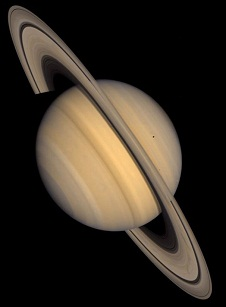

Сатурн
|  |
| Macca: |
5,68*1026кг.
(95 раз больше Земной) |
| Диаметр: |
120420км. (9,46 раз больше Земного) |
| Плотность: |
0,71
г/см3 |
| Температура верхних
облаков: |
-150oC
|
| Длина суток: |
10,54 часа |
| Расстояние от
Cолнца(среднее): |
9,54а.е.(1427
млн.км.) |
| Период обращения по
орбите: |
29,46 года |
| Скорость вращения по
орбите: |
9,6 км/c |
| Ускорение свободного
падения: |
11,3
м/c2 |
|
Сатурн, шестая от Солнца планета, имеет удивительную систему колец. Из-за быстрого вращения вокруг своей оси шар Сатурна как бы сплюснут у полюсов и раздут вдоль экватора. Скорость ветров на экваторе достигает 1800км/ч, что вчетверо больше скорости самых быстрых ветров на Юпитере. Ширина колец Сатурна 400000км., но в толщину они имеют всего несколько десятков метров. Внутренние части колец вращаются вокруг Сатурна быстрее, чем наружные. Кольца в основном состоят из миллиардов мелких частиц, каждая из которых обращается по орбите вокруг Сатурна как отдельная микроскопическая луна. Вероятно, эти "микролуны" состоят из водяного льда или из камней, покрытых льдом. Размер большинства из них - около метра, но в общем их размеры колеблются от нескольких сантиметров до десятков метров. В кольцах имеются и более крупные объекты - каменные глыбы и обломки до сотен метров в поперечнике. Щели между кольцами возникают под действием сил тяготения семнадцати лун (Гиперион, Мимас, Тефия, Титан, Энцелад и др.), которые вынуждают кольца расщипляться.